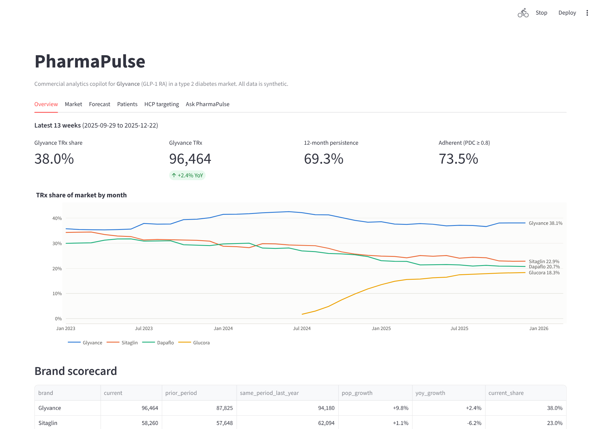

From raw data to a cited answer.
A dashboard, a REST API and an LLM agent, all on the same tested analytics.
An AI analytics copilot for pharma brand teams.
2026
Share. Forecasts. Patients.A brand director asks the same questions every quarter. Are we gaining share? What will TRx look like next quarter? Why are patients dropping off? Which prescribers should reps call next? PharmaPulse answers them with tested analytics, and with an LLM agent that calls the same analytics and cites every figure.
How it works
A dashboard, a REST API and an LLM agent, all on the same tested analytics.
01
Weekly Rx, claims, promotion and payer access
02
Share, forecasts, persistence and targets
03
Every analysis becomes a tool
04
The agent picks the tools it needs
05
Figures traced to their source
Each business question has a tested method behind it.
TRx and NRx share by region and specialty, growth, and a competitor's launch curve.
01
Seasonal naive, Holt-Winters and gradient boosting, picked by 13-week holdout error, with 80% intervals.
02
Kaplan-Meier time on therapy, PDC over 12 months, and where switchers go.
03
Volume deciles, value × loyalty segments, behavioural clusters and a next-best-target score.
04
Incremental NRx per 100 calls from a panel regression on adstocked calls, with its caveat.
05
Model-written queries are parsed: one SELECT, allowed tables, an enforced LIMIT and a 10-second stop.
06
Results
All data is synthetic: a seeded US type 2 diabetes market. No real patients, prescribers or sales figures.
mean forecast error (WAPE) of Holt-Winters ETS on a 13-week holdout, across four brands.
golden business questions passed offline, with the right tool and every key figure. It checks the plumbing, not a model.
offline, from hand-checked PDC and persistence fixtures to SQL-guard attacks.

The questions asked every quarter, and the one nobody planned for.
Share of market by region and specialty, with growth.
For brand directors
01
A 13-week forecast with 80% intervals.
For forecasting teams
02
Time on therapy, adherence and switching.
For patient analytics
03
Deciles, segments and headroom, prescriber by prescriber.
For sales operations
04
Incremental NRx per 100 calls, with its caveat.
For commercial effectiveness
05
Ask the agent: every figure comes from a tool.
For the whole brand team
06
Free under the MIT license. No API key needed: without one, the agent uses an offline mock router.
Clone
git clone https://github.com/faizanreza-cs/pharmapulse.git pharmapulse && cd pharmapulseInstall and build the data
make setup
make dataOpen the dashboard
make appI build analytics and AI agents like this one for pharma commercial teams.
Open to freelance projects and full-time roles.
No. A seeded generator builds a US type 2 diabetes market: 4 brands, 2,000 HCPs, 12,000 patients and 3 years of weekly prescriptions, with promotion, payer access and pharmacy claims.
Every figure in an answer comes from a tool. The model never computes or recalls figures; tool outputs carry the exact rows, with the period, definitions and caveats.
The Anthropic API by default, OpenAI as an extra, and an offline mock router that needs no key and runs the whole pipeline in CI.
Seasonal naive, Holt-Winters ETS and gradient boosting compete on a 13-week holdout, and the lowest WAPE wins for each brand.
I can adapt PharmaPulse to your market, or build the analytics your brand team needs.